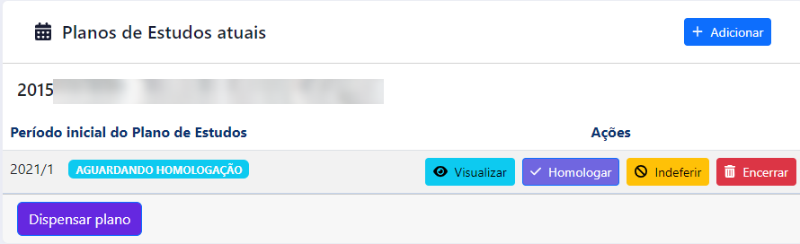

Manual para registro de Plano de Estudos
ATENÇÃO
Consulte a Resolução Consepe n68, de 24/07/2014, na qual esse sistema se baseia, clicando aqui.
Clique no botão 'Controle de Plano' para iniciar.
Figura 1 - Botão Controle de Plano
Na próxima tela você tem acesso à lista de cursos que coordena. Escolha um curso e clique em 'Buscar'. A lista que será apresentada é composta tanto pelos discentes que tem um plano de estudos em curso quanto pelos discentes que solicitaram um Plano de Estudos na última matrícula.
Note que o Plano de Estudos sempre visa o planejamento para o semestre posterior. Portanto, para o devido registro de Plano de estudos, o discente deve estar regularmente matriculado no semestre atual.
Clique no botão azul na coluna 'Ações' ( ) para ter acesso às respectivas ações disponíveis para o discente escolhido.
) para ter acesso às respectivas ações disponíveis para o discente escolhido.
Discente com Solicitação de Plano de Estudos
Caso o discente esteja com a situação 'Solicitação de Plano de Estudo', a coordenação tem duas opções:
- registrar uma dispensa de plano, informando o número do processo e uma observação
- cadastrar um plano de estudos para o discente
Registrar uma dispensa de plano
Caso a coordenação entenda necessário ou caso o discente venha a entrar em contato, a coordenação pode cancelar a solicitação de plano de estudos do discente, clicando no botão 'Dispensar plano'.
Cadastro de Plano de Estudos
Para o cadastro do plano de estudos, basta clicar no botão 'Adicionar' depois de ter selecionado um discente que fez a solicitação de plano de estudos.
Na próxima tela serão exibidas todas as disciplinas pendentes da estrutura atual do discente. Para informar quais disciplinas devem ser incluidas no plano, basta marcar a mesma clicando no botão em destaque, escolhendo também o período de execução da disciplina.
Figura 2 - Tela Cadastro de Plano
Para disciplinas optativas, complementares, optativas livres e eletivas a coordenação também pode fazer um planejamento do quantitativo de carga horária que o discente deve executar. Para isso basta informar o quantitativo, o período de execução e clicar no botão em destaque para adicionar.
Figura 3 - Tela Cadastro de Carga Horária adicional
Enquanto o plano de estudos não for homologado, a coordenação poderá criar novas versões do plano (que sobrescrevem a anterior) quantas vezes achar necessário.
Edição de Plano de Estudos
Apos salvar o plano de estudos este ficará com na situação 'Aguardando homologação' e a coordenação terá novas opções:
 Figura 4 - Tela Edição de Plano
Visualizar plano
Clique no botão 'Visualizar' para visualizar o plano de estudos programado
Homologar plano
Clique no botão 'Homologar' para homologar o plano e encerrar a edição.
Indeferir plano
Caso o plano ainda não tenha sido homologado, é possível indeferir o mesmo clicando no botão 'Indeferir'.
Encerrar
Caso o plano esteja homologado, é possível encerrar o mesmo clicando no botão 'Encerrar'.
Discente sem Solicitação de Plano de Estudos
Figura 5 - Tela Discentes com dispensa
Clique no botão 'Discentes com dispensa' para obter a lista de discentes que solicitaram a dispensa de plano de estudos na última matrícula.
A coordenação pode alterar a situação do discente para solicitante de plano de estudos. Para isso basta clicar no botão 'Solicitar plano' e informar o número do processo relacionado e uma observação.
Depois disso o nome do discente constará na lista para Cadastro do plano de estudos.
Considerações finais
No fim de cada semestre são avaliados os planos de estudos criados. As seguintes situações são analisadas:
- o discente que encerra seu vinculo no curso ou por conclusão ou por alguma forma de desligamento definitivo e que possui um plano de estudos em execução tem esse plano alterado para ENCERRADO;
- o discente que reprova em disciplinas no período letivo tem o plano de estudos alterado para ENCERRADO POR DESCUMPRIMENTO DO PLANO;
- um plano de estudos que está aguardando homologação mas não é homologado ao fim do período letivo é alterado para ENCERRADO POR FALTA DE HOMOLOGAÇÃO;